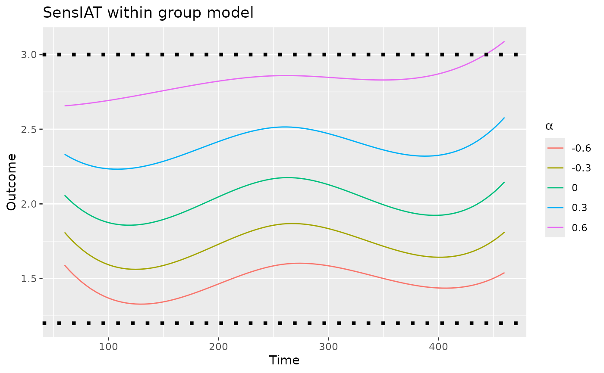

Plot a SensIAT_within_group_model Object
Source: R/autoplot.R
autoplot.SensIAT_within_group_model.RdThis creates a line plot for a SensIAT_within_group_model object.
The horizontal axis represents time, and the vertical axis represents the
expected marginal outcome given the sensitivity parameter alpha.
Examples
# Note: example takes a few seconds to run.
# \donttest{
object <-
fit_SensIAT_within_group_model(
group.data = SensIAT_example_data,
outcome_modeler = fit_SensIAT_single_index_fixed_bandwidth_model,
id = Subject_ID,
outcome = Outcome,
time = Time,
knots = c(60,260,460),
End = 830,
alpha = c(-0.6, -0.3, 0, 0.3, 0.6),
intensity.args=list(bandwidth=30)
)
ggplot2::autoplot(object) +
# Title not included
ggplot2::ggtitle("SensIAT within group model") +
# Nor are bounds on reasonable values of alpha
ggplot2::geom_hline(yintercept = c(1.2, 3), linetype = "dotted", linewidth = 1.5)

# }